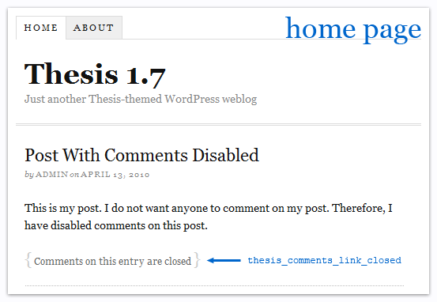
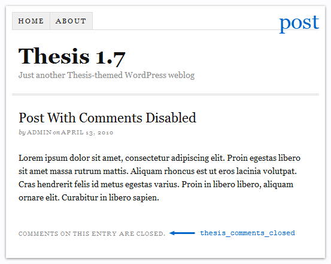
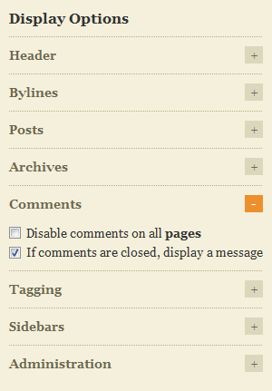
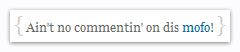

I was looking at the code of the newly-released Thesis 1.7 theme for WordPress, and I came across 2 filters that I hadn’t seen before:
thesis_comments_closed
thesis_comments_link_closed
I wanted to find out more about these filters, so I googled them. To my surprise…there were zero results!?
It was at that moment that I realized…the World is counting on me to demystify these mysterious mysteries, for I am the chosen one. Fear not, my fellow Thesis theme users! I will share my great wisdom with you.
Where can I find these mysterious Thesis filters?
After searching through my local copy of Thesis, I discovered that each filter was mentioned in only one location:
thesis_comments_closed: line 110
/wp-content/themes/thesis_17/lib/classes/comments.php
thesis_comments_link_closed: line 14
/wp-content/themes/thesis_17/lib/functions/comments.php
Notice that these filters are not located in the same files. I’ve highlighted the directory that sets them apart.
How are these Thesis filters defined in the code?
Here is the php code of the functions that contain the Thesis filters:
function form() {
global $thesis_site;
if (comments_open()) { #wp
global $user_ID, $user_identity;
if (get_option('comment_registration') && !$user_ID) { // If registration is required and the user is NOT logged in... #wp
echo "\t\t\t\t<div class=\"login_alert\">\n";
echo "\t\t\t\t\t<p>" . sprintf(__('You must <a href="%s" rel="nofollow">log in</a> to post a comment.', 'thesis'), get_option('siteurl') . '/wp-login.php?redirect_to=' . urlencode(get_permalink())) . "</p>\n"; #wp
echo "\t\t\t\t</div>\n";
}
else { // Otherwise, show the user the stinkin' comment form already!
echo "\t\t\t\t<div id=\"respond\">\n";
echo "\t\t\t\t\t<div id=\"respond_intro\">\n";
if (get_option('thread_comments')) cancel_comment_reply_link(__('Cancel reply', 'thesis')); #wp
echo "\t\t\t\t\t\t<p>" . apply_filters('thesis_comment_form_title', __('Leave a Comment', 'thesis')) . "</p>\n"; #filter
echo "\t\t\t\t\t</div>\n";
echo "\t\t\t\t\t<form action=\"" . get_option('siteurl') . "/wp-comments-post.php\" method=\"post\" id=\"commentform\">\n"; #wp
thesis_hook_comment_form_top();
if ($user_ID) // If the user is logged in... #wp
echo "\t\t\t\t\t\t<p>" . sprintf(__('Logged in as <a href="%1$s" rel="nofollow">%2$s</a>.', 'thesis'), get_option('siteurl') . '/wp-admin/profile.php', $user_identity) . ' ' . sprintf(__('<a href="%s" title="Log out of this account" rel="nofollow">Logout →</a>', 'thesis'), thesis_logout_url()) . "</p>\n"; #wp
else { // Otherwise, give your name to the doorman
$req = (bool) get_option('require_name_email');
?>
<p><input class="text_input" type="text" name="author" id="author" value="<?php echo $comment_author; ?>" tabindex="1"<?php if ($req) echo ' aria-required="true"'; ?> /><label for="author"><?php _e('Name', 'thesis'); if ($req) _e(' <span class="required" title="Required">*</span>', 'thesis'); ?></label></p>
<p><input class="text_input" type="text" name="email" id="email" value="<?php echo $comment_author_email; ?>" tabindex="2"<?php if ($req) echo ' aria-required="true"'; ?> /><label for="email"><?php _e('E-mail', 'thesis'); if ($req) _e(' <span class="required" title="Required">*</span>', 'thesis'); ?></label></p>
<p><input class="text_input" type="text" name="url" id="url" value="<?php echo $comment_author_url; ?>" tabindex="3" /><label for="url"><?php _e('Website', 'thesis'); ?></label></p>
<?php
}
thesis_hook_comment_field();
echo "\t\t\t\t\t\t<p class=\"comment_box\">\n";
echo "\t\t\t\t\t\t\t<textarea name=\"comment\" id=\"comment\" tabindex=\"4\" cols=\"40\" rows=\"8\"></textarea>\n";
echo "\t\t\t\t\t\t</p>\n";
thesis_hook_after_comment_box();
echo "\t\t\t\t\t\t<p class=\"remove_bottom_margin\">\n";
echo "\t\t\t\t\t\t\t<input name=\"submit\" class=\"form_submit\" type=\"submit\" id=\"submit\" tabindex=\"5\" value=\"" . __('Submit', 'thesis') . "\" />\n";
comment_id_fields(); #wp
echo "\t\t\t\t\t\t</p>\n";
thesis_hook_comment_form_bottom();
do_action('comment_form', $post->ID); #wp
echo "\t\t\t\t\t</form>\n";
echo "\t\t\t\t</div>\n";
}
}
elseif ($thesis_site->comments['show_closed']) {
echo "\t\t\t\t<div class=\"comments_closed\">\n";
echo "\t\t\t\t\t<p>" . apply_filters('thesis_comments_closed', __('Comments on this entry are closed.', 'thesis')) . "</p>\n";
echo "\t\t\t\t</div>\n";
}
}
}
/**
* function thesis_comments_link()
*
* Generates and outputs a direct link to a page's or post's comments from index
* or archive views.
*
* @since 1.0.2
*/
function thesis_comments_link() {
if (!is_single() && !is_page()) { #wp
$num_comments = get_comments_number(); #wp
$link = (comments_open()) ? '<a href="' . get_permalink() . '#comments" rel="nofollow">' . thesis_num_comments($num_comments, true) . '</a>' : apply_filters('thesis_comments_link_closed', __('Comments on this entry are closed', 'thesis')); #wp #filter
echo "<p class=\"to_comments\">" . apply_filters('thesis_comments_link', $link) . "</p>\n"; #filter
}
}
function default_skin_comments_link($link) {
return "<span class=\"bracket\">{</span> $link <span class=\"bracket\">}</span>";
}
function default_skin_edit_comment_link($link) {
return "[$link]";
}
What can I do with these Thesis filters?
These filters control the text that appears when you disable comments on one of your posts. To change the text that appears on the home page, you would use the thesis_comments_link_closed filter. To change the text that appears on the post itself, you would use the thesis_comments_closed filter.


Why don’t I see that text…
…anywhere?
A new feature in Thesis 1.7 is the ability to disable the text entirely. To see if your comment text is disabled, go to the settings menu at Thesis => Page Options => Display Options => Comments and make sure the box is checked next to If comments are closed, display a message.

…on my home page?
Not everyone will see the text that appears on the home page. It depends on your Thesis settings. If you have your settings such that the home page doesn’t show any featured posts, then you probably won’t see the text. This setting can be found under Thesis => Page Options => Home Page Display => Number of featured posts to show.
If your home page shows featured posts, but the comment text still isn’t showing up, then check your custom.css stylesheet to see if you intentionally made it disappear sometime in the past and forgot about it. The element that contains the text is <p class="to_comments">...</p>, so your CSS code would probably look like one of these:
.custom .to_comments{ display: none; }.custom .to_comments{ text-indent: -9999px; }.format_text .to_comments{ display: none; }.format_text .to_comments{ text-indent: -9999px; }
…at the bottom of my post?
If the text that appears at the bottom of your posts is missing, it might be because you intentionally made it disappear sometime in the past and forgot about it. The element that contains the text is <div class="comments_closed"><p>...</p></div>, so your CSS code would probably look like one of these:
.custom .comments_closed{ display: none; }.custom .comments_closed{ text-indent: -9999px; }.comments_closed p{ display: none; }.comments_closed p{ text-indent: -9999px; }
How do I use these Thesis filters?
Here is an example of the code you can paste into your custom_functions.php file:
// Define a custom filter for the text that appears on my HOME PAGE.
// This filter changes the text to "Ain't no commentin' on dis mofo!"
if (!function_exists('custom_comments_link_closed')) {
function custom_comments_link_closed() {
return 'Ain\'t no commentin\' on dis mofo!';
}
}
// Hook my custom filter onto the Thesis filter
add_filter('thesis_comments_link_closed', 'custom_comments_link_closed');
// Define a custom filter for the text that appears on my POSTS.
// This filter changes the text to "See? I told you they's no commentin'!"
if (!function_exists('custom_comments_closed')) {
function custom_comments_closed() {
return 'See? I told you they\'s no commentin\'!';
}
}
// Hook my custom filter onto the Thesis filter
add_filter('thesis_comments_closed', 'custom_comments_closed');
Here is another example. This one is similar to the home page example above, but it goes a step further by inserting HTML code, in addition to the text. The result of the following example looks like this:

// Define a custom filter for the text that appears on my HOME PAGE.
// This filter changes the text to "Ain't no commentin' on dis mofo!"
if (!function_exists('custom_comments_link_closed')) {
function custom_comments_link_closed() {
return 'Ain\'t no commentin\' on dis <span style="color:#069; font-size:100%;">mofo</span>!';
}
}
// Hook my custom filter onto the Thesis filter
add_filter('thesis_comments_link_closed', 'custom_comments_link_closed');
Oh and BTW…the comments on this entry aren’t actually closed. So…leave me a compliment, you non-chosen one.